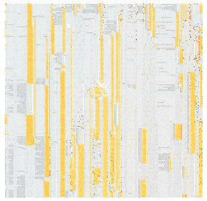
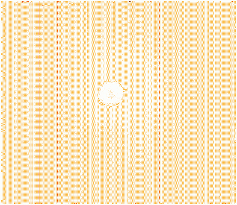

XMM Newton Optical Monitor images are contaminated by a persistent scattered light feature (Fig.1). This feature is a consequence of a uniform background outside of the telescope field of view scattered off of shiny telescope structure. It therefore scales with the background and can be removed in principle. The task omscattered performs this function.
|  |
In order to remove the central scattered light feature a calibrated image containing exclusively this feature is required (the name of the file with this feature can be indicated by the parameter scatset). An example of the image with the calibrated scattered light (for the OM V-filter) is given in Fig.2.
|  |
Calibrated images, one for each filter, containing the scattered structure are planned for inclusion in the SAS CAL system. However, for SAS v9.0 these calibration images can be obtained by direct download from the following URL:
http://www.mssl.ucl.ac.uk/~vny/omscattered/omscatteredfiles.tar.gz
The task omscattered can be called with the following parameters:
omscattered
set= input data set file name
scatset= file with the calibrated scattered light feature;
outset= output image file name;
scalingfactor= to force the scaling of the calibrated data
with a given factor; default value scalingfactor=-1;
innerradius= inner radius for scaling the scattered light
feature, expressed in unbinned pixels;
default value innerradius=-1;
outerradius= outer radius for scaling the scattered light
feature; default value outerradius=-1;
mode= optional parameter for switching between 3
available modes of calculating the scaling factor;
default value mode=1
(the first two parameters are mandatory).
If the second parameter (scatset) is omitted (the file containing the calibrated scattered light feature is not specified) then omscattered will first try to find the appropriate calibration file among the files of the SAS system itself, and only in the case of not finding the required file the task will issue an error message and finish without producing any output file.
If the name of the output file (third parameter) is not specified, the task will use the name of the input file but with an extra letter ``S'' at the beginning of the name.